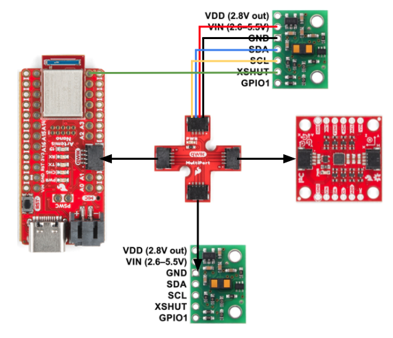

Lab 3: Time of Flight Sensor
Prelab
The datasheet shows that the I2C bus on the ToF sensor uses a device address of 0x52. Since we are using 2 of the same sensors with the same default address, I decided to use the XSHUT pin to change the address on one of the sensors. I chose this over changing the address programmatically for less wiring and power management. Using a jumper, I soldered the XSHUT pin on one of the sensors to the Artemis (pin A2) nso that when powered on, the sensor connected can be held in shutdown mode while the address of the other sensor can be changed. This way, when the soldered sensor is turned back on, it can keeps its default address as the unsoldered sensor will have a new address assigned. Though there are some inconveniences to this method such as having to desolder if something goes wrong and needs to be initialized every startup, it is more suitable for this case where we want to minimize wiring.
As of now, I plan to place one sensor in the front of the car and the other in the back. The sensors won't be able to detect obstables on the sides of the car due to their range, but I assume most of the motion would be backwards and forwards since the car cannot move directly sideways. I soldered the two longer QWIIC connectors to the ToF sensors so they can reach both the front and back, given the Artemis is placed in the center.
Tasks 1 through 4: Hardware Things
I tested out the bluetooth connection using my code for Lab 2: IMU.
Task 5: I2C Channel

Writeup
Task 6: Short, Medium, and Long Distance Modes
The ToF sensor has three distance modes: short, medium, and long, where medium distance mode isn't a built-in hardware feature but a mode that can be configured through software. The longer the distance, the more far out the sensor will be able to detect objects range the sensor covers but becomes more susceptible to ambient light. For this lab, I decided to use the short mode because I anticipate the car to go through abrupt changes in direction and flipping around obstables, rather than coasting for long distances. As long as the sensor can detect obstacles near the car, lower susceptibility to ambien light is better for my use case.

Task 7: Testing [Chosen] Mode
Writeup
Task 8: Connecting Both Sensors
Writeup
Task 9: Cutting down execution time
Writeup
Tasks 10 through 12: Sending Time-stamped sensor Data over Bluetooth
Writeup
Discussion
Writeup
References and Acknowledgements
- stuff